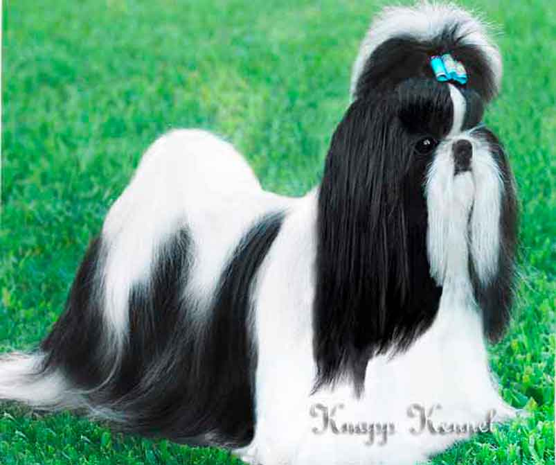

Tutores que procuram por um novo amigo de quatro patas vão amar ter um cachorro Shih Tzu como companhia. Famoso pela fofura e pela beleza dos pelos alongados, ele se adapta muito bem à família humana, já que gosta de dar e receber carinho e é muito animado. Esse cãozinho não precisa de muito espaço, portanto, pode viver tranquilamente em lares menores, como apartamentos. Isso não impede que ele possa ser criado em casas grandes, com quintais, por exemplo. A versatilidade e o fato de ser um bichinho que se acostuma facilmente a diferentes tipos de ambientes, faz desta raça uma das mais queridas!
Esse cãozinho não precisa de muito espaço, portanto, pode viver tranquilamente em lares menores, como apartamentos. Isso não impede que ele possa ser criado em casas grandes, com quintais, por exemplo. A versatilidade e o fato de ser um bichinho que se acostuma facilmente a diferentes tipos de ambientes, faz desta raça uma das mais queridas!
